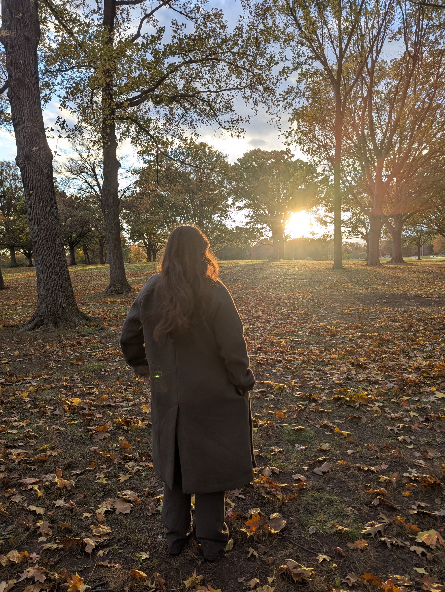

Journalism & Narrative Non-Fiction
Documenting the nuance of the everyday.
I am currently pursuing a Bachelor of Arts in English Literature and Communication – Journalism at Kean University. My reporting focuses on cultural storytelling, mental health advocacy, and bringing hidden community issues to the forefront.
Through my role as Feature Editor and Staff Reporter for The Tower, I craft deeply researched narratives while ensuring rigorous editorial standards. My internship at The Lesniak Institute further grounds my work in real-world community impact and public outreach.
Academic Foundations
Bridging English Literature and Journalism for empathetic reportage.
Walt Whitmann, O Me! O Life!
"That you are here—that life exists and identity,
That the powerful play goes on, and you may contribute a verse."
Journalism Goals
-
Promote Awareness
-
Represent Marginalized Populations
-
Exemplify Transparency
"Truth through the lens of human experience."
Technical Toolkit
Editorial
Copy Editing, Fact Checking, Style Guide Adherence (AP/Chicago), Narrative Structure.
Creative Suite
Canva, Adobe Premiere Pro.
Multimedia
Digital Photography, Photojournalism, Field Recording, Audio Production for Podcasts.